Hiérarchie des moyens de prévention
La hiérarchie des moyens de prévention privilégie l'élimination à la source (art. 2 LSST) et descend, par ordre d'efficacité, vers la substitution, l'ingénierie, l'administratif et finalement l'EPI (dernier recours). En sécurité machine, l'ISO 12100 structure la même logique en trois étapes : prévention intrinsèque, protection (protecteurs et dispositifs), informations pour l'utilisation. La modification 2021 de la LSST (art. 51 et 59) rend cette hiérarchie obligatoire au Québec. La ventilation reste l'outil d'ingénierie le plus utilisé en hygiène industrielle, particulièrement structurant en mine souterraine.
Table des matières
- Logique générale de la hiérarchie
- Étape 1, élimination et substitution (prévention intrinsèque)
- Étape 2a, contrôles d'ingénierie et ventilation
- Étape 2b, protecteurs fixes et mobiles
- Étape 2c, dispositifs de protection
- Étape 2d, cadenassage et alternatives
- Étape 3, mesures administratives et information
- Étape 4, EPI (dernier recours)
- Application terrain
- Ressources
Logique générale de la hiérarchie
La hiérarchisation classique des moyens, du plus efficace au moins efficace, est rappelée dans le schéma suivant.
{kind=link}
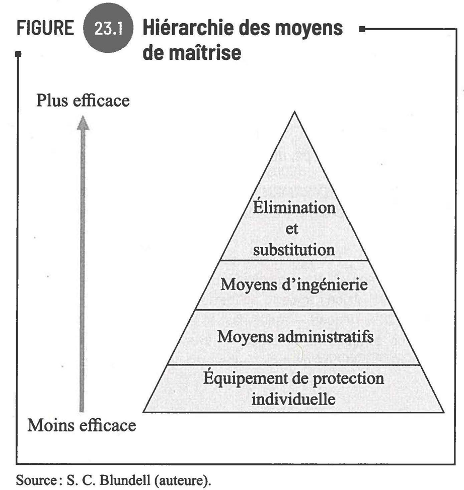
Toucher l'image pour l'agrandir- Élimination du danger.
- Substitution (produit, procédé, équipement).
- Ingénierie (encoffrement, ventilation locale).
- Administratif (rotation, formation, procédures).
- EPI (dernière barrière).
Une représentation alternative, sous forme de pyramide, met l'accent sur la portée organisationnelle des niveaux supérieurs.
{kind=link}
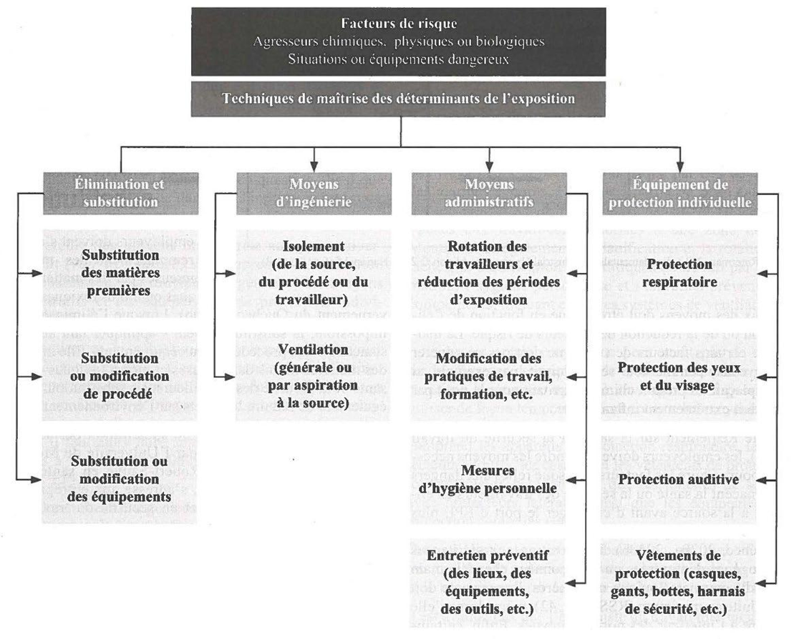
Toucher l'image pour l'agrandirISO 12100:2010 (sécurité machine) : méthode en trois étapes (art. 6.1)
- Mesures de prévention intrinsèque (à la conception).
- Protection et mesures de prévention complémentaires.
- Informations pour l'utilisation (formation, signalisation, manuels).
{kind=link}
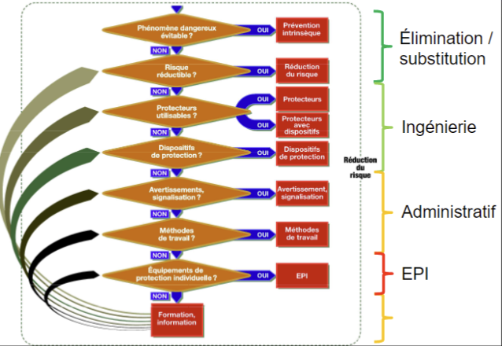
Toucher l'image pour l'agrandirApproche CCHST équivalente : élimination / substitution, mesures d'ingénierie, mesures administratives, EPI.
{kind=link}
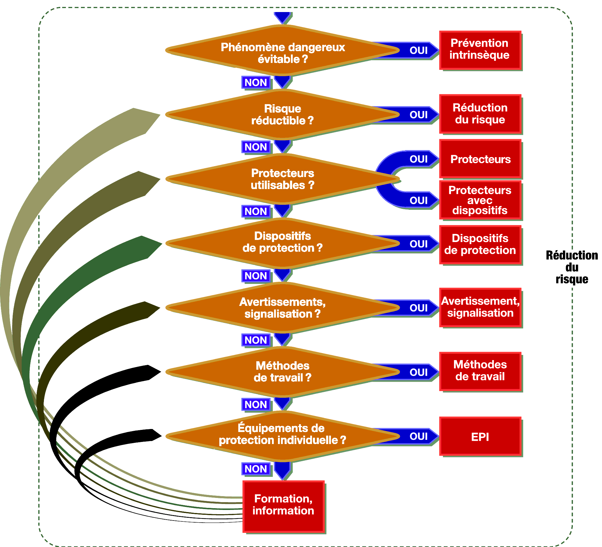
Toucher l'image pour l'agrandirPrincipe directeur : LSST art. 2 (élimination à la source) et art. 3 (les EPI ne diminuent en rien l'obligation d'éliminer à la source). La modification 2021 de la LSST (art. 51 et 59) rend la hiérarchie des mesures de prévention obligatoire.
Vue améliorée de la méthode.
{kind=link}
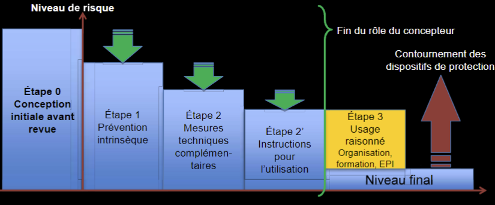
Toucher l'image pour l'agrandirÉtape 1, élimination et substitution (prévention intrinsèque)
ISO 12100 art. 6.2 (et CSA Z432-2016). « Première et plus importante étape » : elle élimine le phénomène dangereux par un choix de conception, sans dépendre d'un dispositif ou d'un comportement.
- Élimination (LSST art. 2) : l'esprit de la loi est l'élimination à la source. Peut impliquer un changement de procédé complet.
- Substitution produit : par exemple remplacer le sable par des billes de verre dans le jet d'abrasif pour éviter la silice.
- Substitution procédé : passer à un procédé à base d'eau, en circuit fermé, ou à plus basse température.
- Substitution équipement : achat moins polluant ou moins bruyant (chariot électrique, ventilateur insonorisé).
Critères d'évaluation : faisabilité technique, coûts, impact environnemental, conséquences organisationnelles, gains SST.
14 leviers de prévention intrinsèque (ISO 12100)
- Facteurs géométriques (visibilité, angles morts, miroirs)
- Aspects physiques (forme, masse, vitesse réduite)
- Connaissances techniques générales sur la conception
- Choix d'une technologie adéquate (ex. ATEX, solvants moins toxiques)
- Action mécanique positive
- Stabilité
- Maintenabilité (réglages depuis l'extérieur)
- Principes ergonomiques (postures, efforts)
- Phénomènes électriques (contacts directs / indirects, détrompage, statique)
- Phénomènes hydrauliques et pneumatiques
- Mesures intrinsèques aux systèmes de commande
- Minimiser la défaillance des fonctions de sécurité
- Fiabilité du matériel
- Mécanisation / automatisation et positionnement des points de maintenance hors zone dangereuse
Écartements de sécurité (ISO 13854:2017, anti-écrasement)
{kind=link}
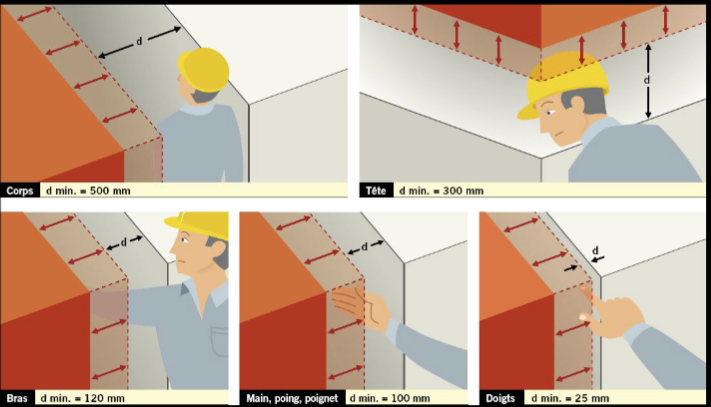
Toucher l'image pour l'agrandir| Partie du corps | Écartement minimal |
|---|---|
| Corps | 500 mm |
| Tête | 300 mm |
| Jambe | 180 mm |
| Bras | 120 mm |
| Pied | 120 mm |
| Main | 100 mm |
| Orteils | 50 mm |
| Doigt | 25 mm |
Étape 2a, contrôles d'ingénierie et ventilation
Catégories d'ingénierie
- Encoffrement, capotage.
- Automatisation et téléopération.
- Modification du procédé.
- Ventilation (locale et générale).
Classification de la ventilation
| Type | Description |
|---|---|
| Ventilation générale | Dilution par mélange d'air frais ; mécanique ou naturelle (effet de cheminée, vent) |
| Ventilation locale | Captation à la source via hottes, bras de captation. Plus efficace, débit moindre |
Représentation d'une ventilation générale en atelier industriel.
{kind=link}
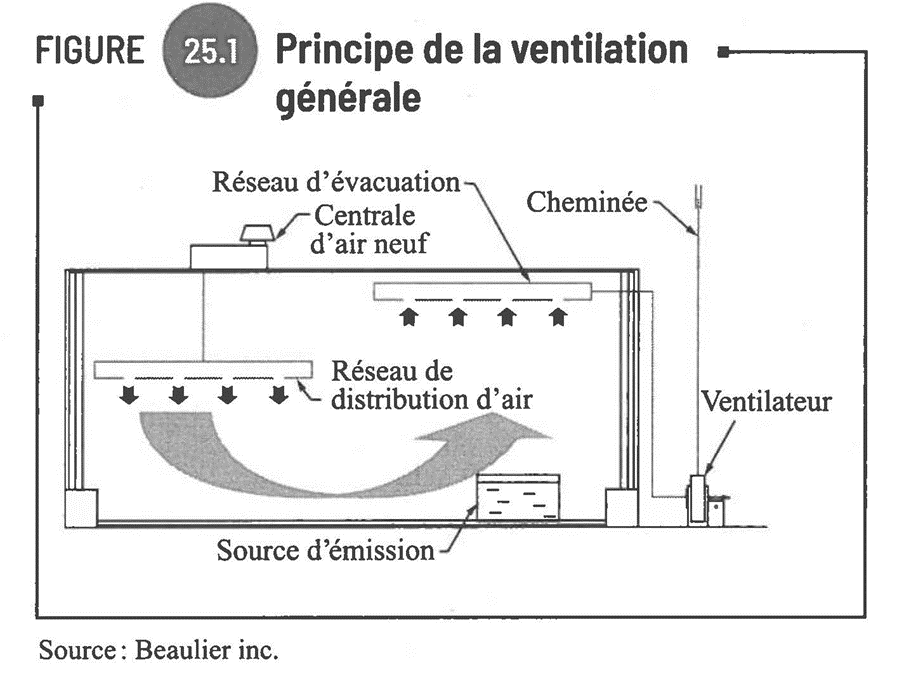
Toucher l'image pour l'agrandirApplication en milieu de bureau.
{kind=link}
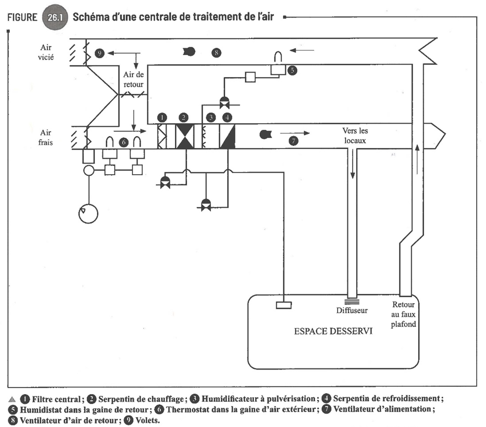
Toucher l'image pour l'agrandirLe principe de captation locale combine captation, filtration et rejet contrôlé.
{kind=link}
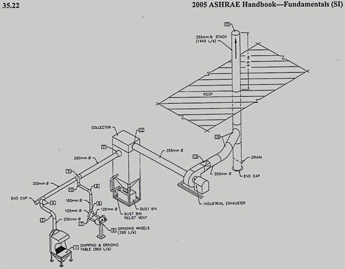
Toucher l'image pour l'agrandirArticles RSST clés
| Art. | Disposition |
|---|---|
| 5 | Tout équipement doit être en état de fonctionnement optimal |
| 101 | Nécessité de ventilation |
| 103 | Nombre de changements d'air frais à l'heure (annexe III) |
| 104 | Inspection annuelle des systèmes mécaniques |
| 106 | Localisation des prises d'air (éviter l'air contaminé) |
| 107 | Captation à la source |
| 113 | Produits de combustion évacués à l'extérieur |
L'annexe III du RSST détaille les exigences de ventilation par type de local.
{kind=link}
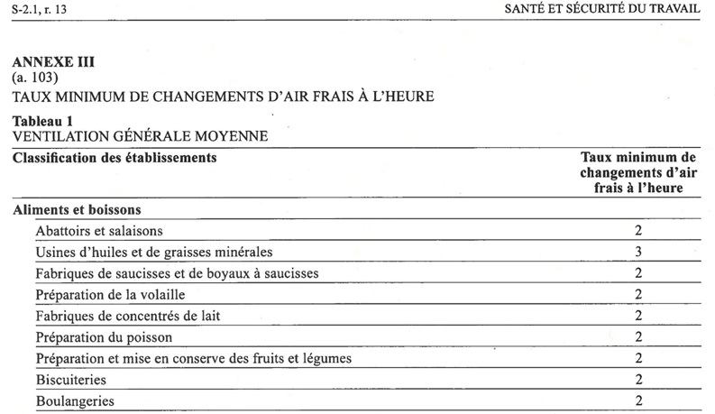
Toucher l'image pour l'agrandirTypes de hottes et vortex de Karman
- Hotte latérale : petites pièces, bien acceptée par les opérateurs.
- Hotte inférieure : gros débit, attention au colmatage.
- Bras de captation : fumées de soudage, sensible aux courants d'air.
Phénomène à connaître : le vortex de Karman. La séparation instable de l'écoulement autour du travailleur fait remonter l'air contaminé vers la zone respiratoire. Solution : abaisser la vitesse d'air, modifier la position du travailleur (vortex de côté ou de dos).
{kind=link}
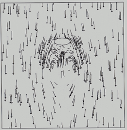
Toucher l'image pour l'agrandir{kind=link}
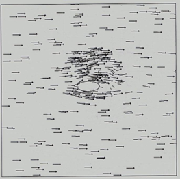
Toucher l'image pour l'agrandirSystèmes d'épuration
Avant rejet à l'extérieur, l'air contaminé peut être traité par différents systèmes.
Collecteur à manches.
{kind=link}
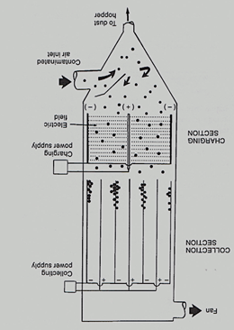
Toucher l'image pour l'agrandirPrécipitateur électrostatique.
{kind=link}
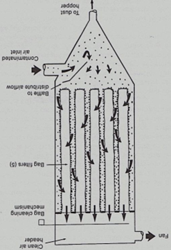
Toucher l'image pour l'agrandirCyclone.
{kind=link}
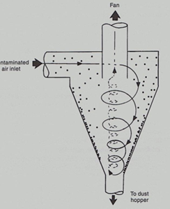
Toucher l'image pour l'agrandirEntretien préventif obligatoire : détection des bris, maintien des performances, vérification des correctifs. Inspection annuelle, filtres entretenus ou remplacés au besoin (art. 104).
Étape 2b, protecteurs fixes et mobiles
Référence : ISO 14120:2015, RSST art. 174-182.
{kind=link}
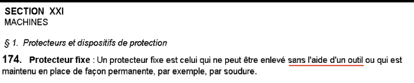
Toucher l'image pour l'agrandirProtecteur fixe : maintenu en place de façon permanente (soudure) ou par éléments de fixation nécessitant un outil pour être déplacé. Une pièce de monnaie ou une lime à ongles n'est pas un outil (ISO 14120). Préférer les fixations imperdables.
Sous-types
- Enveloppant : interdit l'accès de toutes parts (carter, capot, enceinte).
- De maintien à distance : barrière, enceinte périphérique (CSA Z432-16 : 1,8 m min sinon dispositifs supplémentaires).
- D'angle rentrant : empêche l'accès à la zone de convergence.
{kind=link}
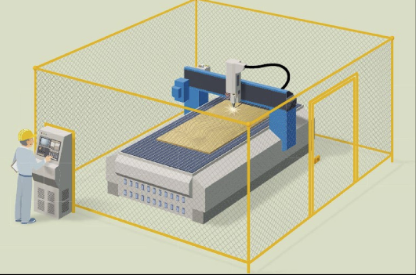
Toucher l'image pour l'agrandirSix types d'angles rentrants (zones d'entraînement / écrasement)
- Le traditionnel (deux cylindres en contact, sens opposés)
- Le 2 vitesses (sans contact, même sens, vitesses différentes)
- L'accrocheur (frictions différentes)
- Le solitaire (cylindre près d'une partie fixe)
- L'oublié (sans contact, sens contraires, non motorisés)
- L'enrouleur (matériau s'enroulant)
{kind=link}
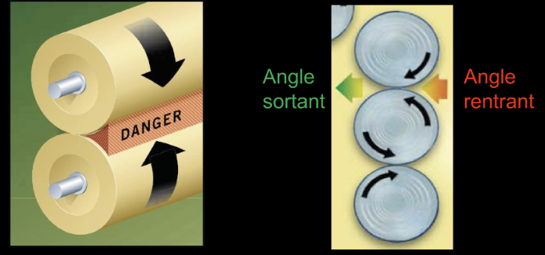
Toucher l'image pour l'agrandirMythe à déconstruire : « j'ai le temps de me retirer ». Temps de réaction humain ≈ 400 ms. À 200 tr/min sur Ø 7 cm, la distance parcourue en 0,4 s est de 29 cm.
Protecteur mobile : ouvrable sans outil (charnière, glissière). Doit être lié à un dispositif de verrouillage (4 types selon ISO 14119) ou d'interverrouillage (blocage maintenu jusqu'à arrêt complet).
{kind=link}
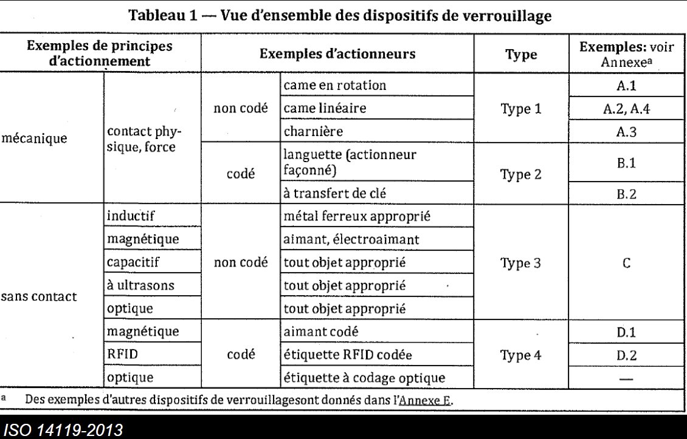
Toucher l'image pour l'agrandirProtection par éloignement (ISO 13857:2019, CSA Z432-16)
{kind=link}
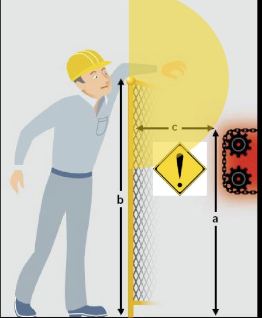
Toucher l'image pour l'agrandir- Sous le protecteur : zone dangereuse < 2,7 m doit être protégée.
- Au-dessus : tables A / B / C avec hauteur de la zone dangereuse, du protecteur et distance. Risque élevé : protecteur de 1,8 m min.
- À travers : ouvertures (fente, carré, rond) limitées selon ISO 13857. Jamais d'interpolation, toujours valeurs les plus restrictives.
{kind=link}
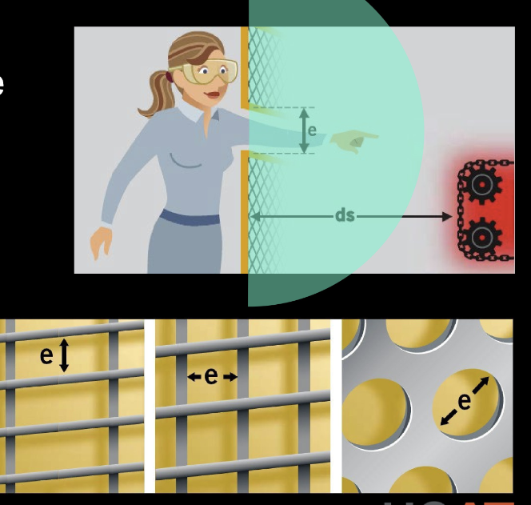
Toucher l'image pour l'agrandirÉtape 2c, dispositifs de protection
Détection de présence ou de position. Référence : ISO 13855 (vitesse d'approche), CSA Z432.
| Dispositif | Principe |
|---|---|
| Barrage immatériel (rideau lumineux) | Faisceaux infrarouges, arrêt à l'interruption |
| Détecteur surfacique (scanner laser) | Zones de détection programmables |
| Caméra de sécurité 3D | Reconnaissance volumique |
| Tapis sensible | Détection au poids |
| Bordure sensible | Contact mécanique |
| Commande bimanuelle | Deux mains hors zone dangereuse pendant le cycle |
| Détection optique pour presse-plieuse | Caméras alignées avec la lame |
Autres moyens techniques
- Arrêt d'urgence (RSST art. 192) : accessible, identifiable, sans rétention.
- Câble d'arrêt d'urgence sur convoyeurs.
- Dispositif de validation (homme mort) pour les modes spéciaux.
- Dispositif de freinage (arrêt rapide).
Distance d'installation calculée selon ISO 13855 : S = K × T + C (K = vitesse d'approche, T = temps de réponse, C = pénétration).
Étape 2d, cadenassage et alternatives
Référence : CSA Z460-13, ISO 14118 (mise en marche intempestive), RSST art. 188.1 (remplacé)-188.13. Voir Gestion des risques en entreprise.
{kind=link}
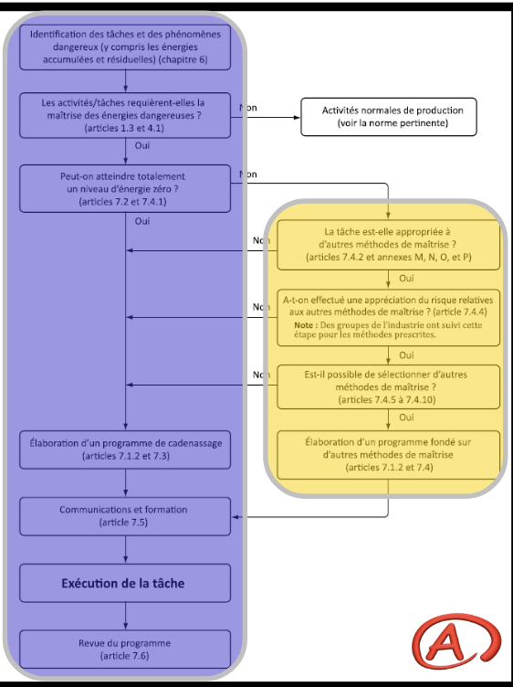
Toucher l'image pour l'agrandirÉtapes essentielles
- Désactivation et arrêt complet.
- Élimination ou contrôle des énergies résiduelles (gravité, ressorts, accumulateurs, condensateurs).
- Programme de cadenassage CSA Z460 de chaque dispositif d'isolement.
- Vérification (essai de démarrage).
Phénomènes à cadenasser : électriques, mécaniques, pneumatiques, hydrauliques, chimiques, thermiques, radiations.
{kind=link}
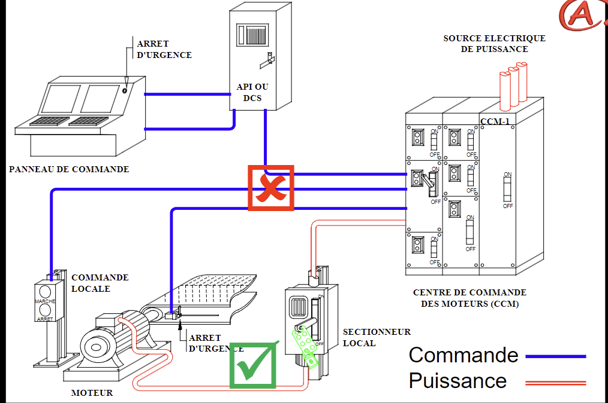
Toucher l'image pour l'agrandirMéthodes alternatives (RSST art. 188.4 (remplacé), CSA Z460)
- Arrêt de sécurité commandé (SS1, SS2 selon ISO 13849).
- Système à transfert de clé (Trapped Key).
- Mode de commande spécifique (art. 188.2).
L'alternative exige une appréciation du risque démontrant une sécurité équivalente.
{kind=link}
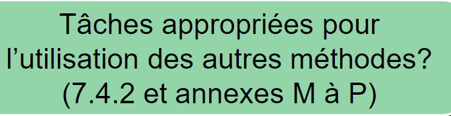
Toucher l'image pour l'agrandirÉtape 3, mesures administratives et information
- Rotation de poste, réduction du temps d'exposition.
- Procédures de travail écrites.
- Formation et information.
- Critères d'achats (équipements moins polluants).
- Entretien préventif planifié.
Quand les étapes précédentes n'épuisent pas le risque, on informe : signalisation, manuels, formation, procédures, EPI.
Trois constats au Québec : les avertissements seuls ne suffisent pas, la formation s'oublie, les EPI sont mal portés.
SIMDUT 2015 : Système d'information sur les matières dangereuses utilisées au travail.
- Régi par Santé Canada (Loi sur les produits dangereux) et par la CNESST au Québec.
- Pictogrammes du SGH (Système général harmonisé).
- Trois responsabilités : fournisseur (étiquette + FDS), employeur (programme de formation), travailleur (utilisation conforme).
Voir SIMDUT et classes de danger pour le détail des pictogrammes et la lecture d'une FDS.
Le langage joue un rôle dans les accidents (référence : Christian Morel, Les décisions absurdes). Importance de la transparence et de la capacité à dire « non ».
Étape 4, EPI (dernier recours)
Référence : RSST Sections III à VII, normes CSA Z94 (casques, lunettes, chaussures), CSA Z259 (chutes), CSA Z180.1 (air respirable), CSA Z94.4 (protection respiratoire).
{kind=link}
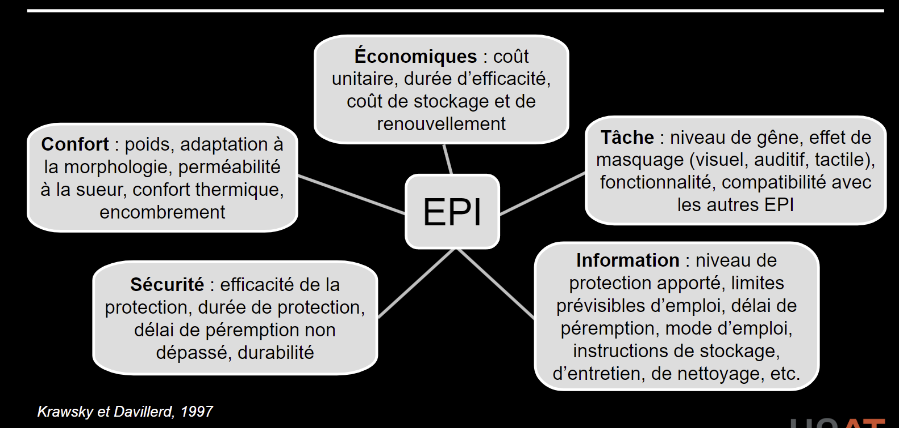
Toucher l'image pour l'agrandirÀ sélectionner selon
- Type de contaminant et concentration.
- Voie d'exposition (peau, respiration, yeux, ouïe).
- Confort et compatibilité avec la tâche.
Hiérarchie par partie du corps
| Zone | EPI | Norme |
|---|---|---|
| Tête | Casque de sécurité | CAN/CSA Z94.1-15 |
| Yeux / visage | Lunettes, visière | CAN/CSA Z94.3-15 |
| Oreilles | Bouchons, coquilles | CSA Z94.2 |
| Voies respiratoires | Protection respiratoire (APR) | CSA Z94.4 |
| Mains | Gants (anti-coupure, chimiques, thermiques) | Spécifications selon usage |
| Pieds | Chaussures à embout | CSA Z195 |
| Corps entier | Harnais antichute | CSA Z259.10-12 |
| Vêtement haute visibilité | CSA Z96 |
Méthode générale de choix : analyse des phénomènes dangereux, performance de la protection, conditions d'utilisation, essais (présélection, préliminaires, terrain), formation, ajustement, entretien, registre.
LSST art. 51.11 (abrogé) : l'employeur fournit gratuitement les EPI choisis par le CSS, et s'assure de leur utilisation.
Exemple d'EPI de niveau A, habit encapsulé étanche, pour des contextes d'urgence ou de retrait spécialisé.
{kind=link}
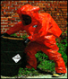
Toucher l'image pour l'agrandirEffet réel du non-port des protecteurs auditifs : la protection « presque portée » ne protège pas.
{kind=link}
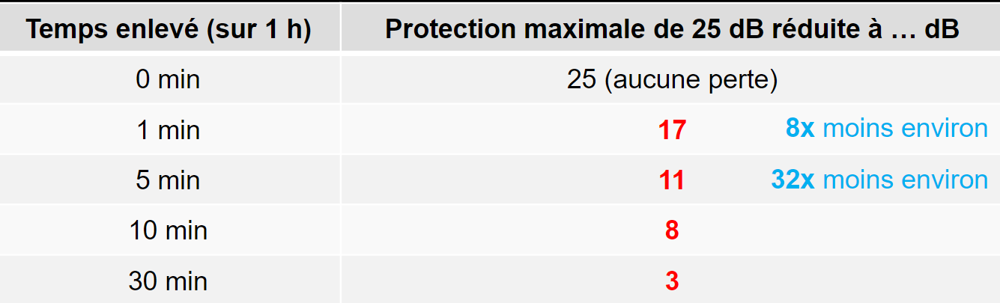
Toucher l'image pour l'agrandirApplication terrain
Hiérarchie appliquée au contexte minier
| Niveau | Exemples en mine |
|---|---|
| Élimination | Téléopération de la foreuse, électrification de la flotte (suppression du diesel) |
| Substitution | Remplacement de l'ANFO par une émulsion à plus faible émission gazeuse ; passage du diesel à la batterie |
| Ingénierie | Ventilation principale, ventilation auxiliaire de chantier, encoffrement de concasseurs, captation à la source sur perforatrice (eau ou aspiration) |
| Administratif | Délais de réentrée post-sautage, rotation des opérateurs en zone empoussiérée, planification du forage humide |
| EPI | Protection respiratoire (APR) demi-masque P100 ou complet motorisé, protecteurs auditifs CSA Z94.2, lunettes, gants chimiques pour réactifs |
Configurations minières et hiérarchie machine appliquée
| Phénomène dangereux | Étape 1 (intrinsèque) | Étape 2 (protection) | Étape 3 (information) |
|---|---|---|---|
| Chute de roches en chantier | Plan de minage, géométrie, soutènement | Écaillage mécanisé, boulonnage, treillis | Procédure d'écaillage, formation |
| Heurt équipement / piéton | Séparation des voies, géométrie de rampe | Détection de proximité, gyrophares, radio | Plan de circulation, formation cariste |
| Bruit en milieu de travail jackleg (120-130 dBA) | Substitution par foreuse mécanisée | Encoffrement de la source, distance | Bouchons + coquilles, audiométrie |
| Arc électrique sous-station | Conception modulaire, télémanipulation | Cadenassage, écrans, sas | Procédure CSA Z462, EPI Cal/cm² |
| Atmosphère en chantier borgne | Ventilation principale dimensionnée | Ventilation auxiliaire, détecteurs fixes | Permis d'entrée, formation Entrer dans un espace clos en sécurité |
Leviers spécifiques au secteur minier
- Spécifier la hiérarchie ISO 12100 dans les devis d'achat d'équipement neuf (concentrateur, équipement mobile).
- Auditer périodiquement les protecteurs fixes : disparaissent souvent en maintenance et ne reviennent pas.
- En souterrain, traiter la ventilation auxiliaire comme une mesure d'ingénierie de niveau 2 (et non comme un EPI collectif).
- Programmer une revue annuelle des EPI portés : usure, pertinence, alternatives.
- La ventilation auxiliaire (tubes flexibles) en bout de galerie est souvent le moyen d'ingénierie le plus déterminant pour la qualité de l'air au front de taille. Son dimensionnement et son entretien (déchirures, joints) doivent faire l'objet d'un suivi formel.
Souterrain vs surface : en souterrain, les étapes 1 et 2 sont contraintes par l'environnement géotechnique. La prévention intrinsèque passe souvent par l'éloignement (téléopération depuis la surface) plutôt que par la modification de la machine elle-même.
Ressources
| Document | Type | Source |
|---|---|---|
| ISO 12100:2010 | Norme | ISO |
| ISO 13854:2017 (écartements) | Norme | ISO |
| ISO 13857:2019 (distances) | Norme | ISO |
| ISO 14119 (verrouillage) | Norme | ISO |
| ISO 14120 (protecteurs) | Norme | ISO |
| CSA Z432-16 (protection des machines) | Norme | CSA |
| CSA Z460-13 (cadenassage) | Norme | CSA |
| CSA Z462 (sécurité électrique) | Norme | CSA |
| Industrial Ventilation Manual | Référence technique | ACGIH |
| Guide ventilation locale | Guide | INRS (ED 695) |
| RSST annexe III | Règlement | LégisQuébec |
| RSST Section XXI (art. 172-226) | Règlement | LégisQuébec |
| Programme d'entretien préventif | Gabarit | À développer en interne |
Articles wiki connexes
Pages qui pointent ici (23)
- 🎯 Démarrage rapide, conseiller SST Hygiène industrielle
- 🎯 Démarrage rapide, direction et RH Hygiène industrielle
- 🎯 Démarrage rapide, superviseur Hygiène industrielle
- 🏠 Wiki Hygiène industrielle, mines Hygiène industrielle
- Aérosols Hygiène industrielle
- Amiante Hygiène industrielle
- art-124-RSST Hygiène industrielle
- art-174-RSST Hygiène industrielle
- art-188.1-RSST Hygiène industrielle
- art-188.4-RSST Hygiène industrielle
- art-192-RSST Hygiène industrielle
- art-2-LSST Hygiène industrielle
- art-51-11-LSST Hygiène industrielle
- art-51-LSST Hygiène industrielle
- Bruit en milieu de travail Hygiène industrielle
- Contrainte thermique Hygiène industrielle
- Démarche AREC Hygiène industrielle
- Démarche en hygiène industrielle Hygiène industrielle
- Gaz et vapeurs Hygiène industrielle
- Prévention et programmes Hygiène industrielle
- Protection respiratoire (APR) Hygiène industrielle
- Qualité de l'air intérieur Hygiène industrielle
- Rayonnements ionisants et non ionisants Hygiène industrielle